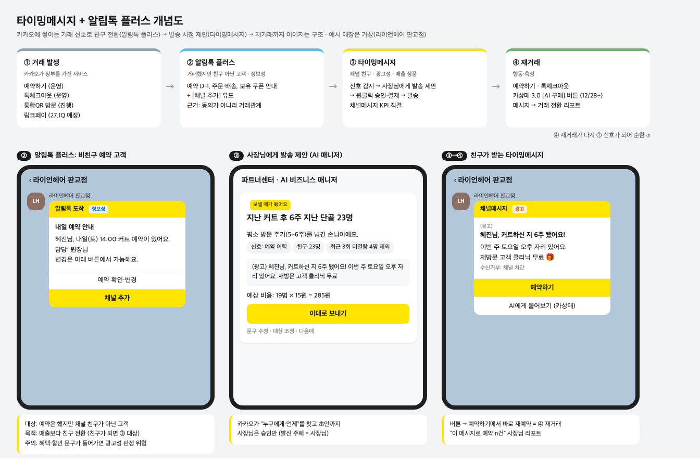

타이밍메시지 사업기획
카카오에 쌓이는 거래 신호로 "누구에게, 언제" 보낼지 찾아 사장님에게 채널메시지 발송을 제안하는 기능
사장님은 승인만 · 발신은 사장님 채널 이름 · 과금은 일반 채널메시지 단가 · 사장님 노출명(안) 단골메시지
타이밍메시지
- 대상
- 채널 친구
- 성격
- 광고성 (재방문·재구매 제안)
- 역할
- 채널메시지 매출 (부서 핵심 KPI)
- 예
- "지난 커트 후 6주 지난 단골 23명에게 보낼까요?"
알림톡 플러스 (재정의)
- 대상
- 거래했지만 채널 친구 아닌 고객
- 성격
- 정보성 (예약 D-1, 주문·배송 안내)
- 역할
- 친구 전환 입구 → 타이밍메시지 대상 확대
- 예
- 예약 안내 알림톡 + [채널 추가] 버튼
1왜 하나
- 매출 집중: 광고+카비즈 매출 90% 이상이 4~5천 사업자에 의존 (p60)
- 채널메시지 정체: 3분기 YoY -0.04% (p34), 4분기 KR 채널메시지 +93억 필요 (p28)
- SME가 안 보내는 이유: 누구에게·언제 보낼지 판단할 데이터와 시간 부재
- 효과 근거: 커머스 메시지 개인화 후 발송당 거래액 톡딜 +24%, 선물하기 약 2배 (p6). 대형은 이미 데이터 기반, SME만 수단 없음
2상품 구조

- 흐름: 거래 → 알림톡 플러스(친구 전환) → 타이밍메시지(발송 제안) → 재거래 → 다시 신호
- 위치: 독립 상품이 아니라 파트너센터 메시지 홈 AI 작성(황성문, 12/29 재설계)에 "신호 칩" 추가
메시지 홈 AI 작성 (진행 중)무엇을 쓸지 · 업종·시즌 칩 → AI 초안
+ 타이밍메시지 (제안)언제·누구에게 · 거래 신호 칩 → "보낼 때가 됐어요: 6주 안 온 단골 23명"
3이미 해본 것: 통합QR 리텐션 메시지
- BM스쿼드(victoria.sy) 진행 중, 타이밍메시지의 원형
- 내용: 쿠폰 다운로드 7일 후 매장 채널 이름으로 자동 발송 (목요일 배치)
- 범위: 피트니스 80개 매장, 8/20~12/31, 발송비 카카오 부담(무상캐시 100만원)
- 법무(andante.0): 채널 추가 = 광고 수신 동의 → 친구 대상 자동 발송 가능, 발송 빈도만 주의
- 시사점: 친구 대상 1단계는 법적으로 열려 있음. 성과 실측은 미실시
4신호를 줄 서비스
| 서비스 | 덱 | 상태 | 알림톡 플러스 | 타이밍메시지 신호 |
|---|---|---|---|---|
| 예약하기 | p14·16·26 | 운영 | 예약 알림 → 친구 유도 | 예약 주기 리마인드 |
| 톡체크아웃 | p16·21 | 운영 | 주문 알림톡 → 친구 유도 | 재구매 주기 |
| 통합QR | p15·16·25·28 | 진행 | 불필요 (스캔 시 친구) | 재방문 유도 (QR 리텐션 메시지) |
| 링크페이 | p25·29 | 예정 27.1Q | 주문·배송 알림톡이 입구 | 재구매 주기 (구매 장부 카카오 보유) |
| 비즈니스 에이전트 결제 | p27 | 진행 12/28 | — | 결제 완료 = 재주문 신호, 메시지→결제 측정 |
- 링크페이 예: 오픈채팅에서 원두를 산 손님이 한 달 지남 → 판매자에게 "재구매 시기 된 손님 40명" 제안 → 메시지의 링크페이 링크로 바로 재구매 (오픈채팅 판매방 8.4만 중 메시지 미사용층 유입)
- 근거가 아닌 것: 카상매 2.0 대화(문의는 거래 아님), 비즈패스·통합회원(사업자 단위 데이터)
5결제까지 이어지면: 에이전트 결제 연결

- 결제의 역할 2가지: ① 결제 완료 기록 = 다음 발송 시점 신호 ② 메시지 → 결제를 같은 채팅방에서 측정
- 결제 방식: 에이전트 채팅방에서 카카오페이 간편결제 호출 (10/23 결정)
- 진행 채팅방 AI 쇼핑 + 결제, 12/28 1차 오픈, 대형 제휴사(GS SHOP·현대홈쇼핑·아임웹 등)
- 범위 외 메시지 버튼 → 에이전트 연결 (12월 범위 제외)
- 확인 필요 아임웹 소형몰·요기요 입점 매장 등 SME까지 열리는지 / 결제 기록을 카카오가 마케팅 신호로 쓰려면 별도 동의 필요 (현재는 제휴사 정보 제공 동의만)
6법적 근거와 단계
| 단계 | 대상 | 근거 | 상태 |
|---|---|---|---|
| 1단계 | 채널 친구 | 채널 추가 = 광고 수신 동의 (QR 리텐션 법무 선례) | 선례 있음 |
| 2단계 | 거래한 비친구 (광고) | 정보통신망법 §50 거래관계 예외: 거래 중 직접 받은 연락처, 6개월 내, 같은 종류 재화 | 법무 질의 필요 |
| 입구 | 거래한 비친구 (정보성) | 알림톡 플러스 1차 검토 추진 3조건: ① 거래완료 모수 축소 ② 액션 화면 고지 ③ 사업자 약관 개정 | ①만 충족 |
7추진 단계 (안)
| 단계 | 시기 | 내용 |
|---|---|---|
| 0. 검증 | 26.11~12 | QR 리텐션 메시지 성과 실측, 예약하기·톡체크아웃 기반 발송 가능 모수 실측 |
| 1. 신호 칩 | 27H1 | 메시지 홈에 예약·구매 신호 칩 추가, 친구 대상, 사장님 승인 발송 |
| 2. 확장 | 27H2 | 링크페이·통합QR 신호 추가, 알림톡 플러스로 친구 전환, 비친구 광고는 법무 결과에 따라 |
| 3. 결제 연결 | 27~ | 메시지 버튼 → 에이전트 채팅방 → 결제, 메시지 성과 리포트 |
8겹치는 과제와 논의할 것
- 겹치는 과제: BM스쿼드 거래내역기반 메시지(비친구 광고, 우선순위 대기) · 메시지 홈 AI 발송 재설계(12/29) · 채널홈 2027 c04/c05 · 그로스빌드 QR 리텐션 · 메시지광고스쿼드 CRM 메시지 · 동반성장 "프로젝트 단골"(이름 겹침, 지원금 연계 여지)
- 독립 과제로 갈지, 메시지 홈 AI 작성에 신호 칩으로 편입할지
- BM스쿼드 거래내역기반 메시지와 합칠지 (비친구 2단계)
- 비즈니스 에이전트 TF에 마케팅 활용 동의 포함을 요청할지
- 톡체크아웃·링크페이 주문 알림톡 발신 채널 확인 (판매자 채널 vs 공식 채널)